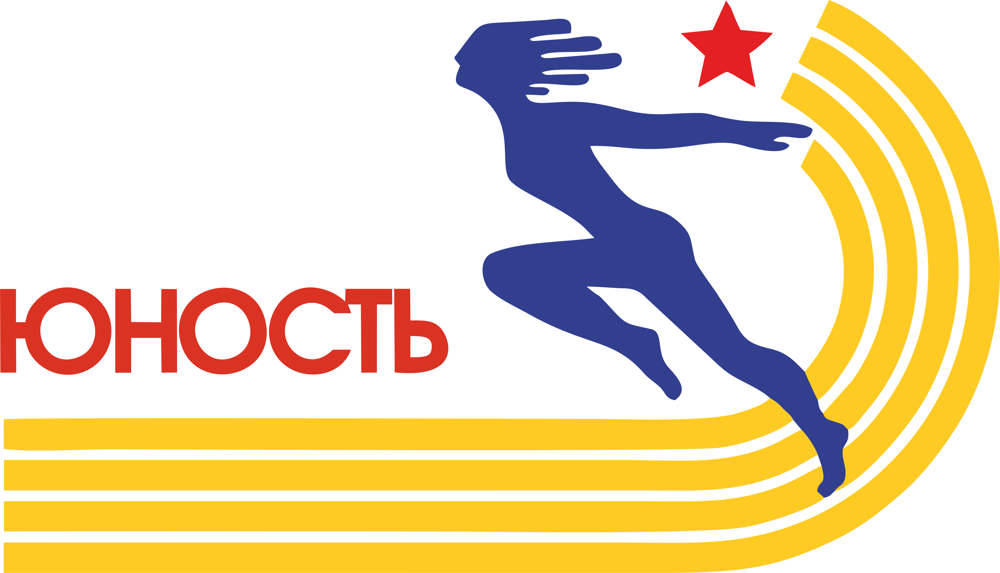
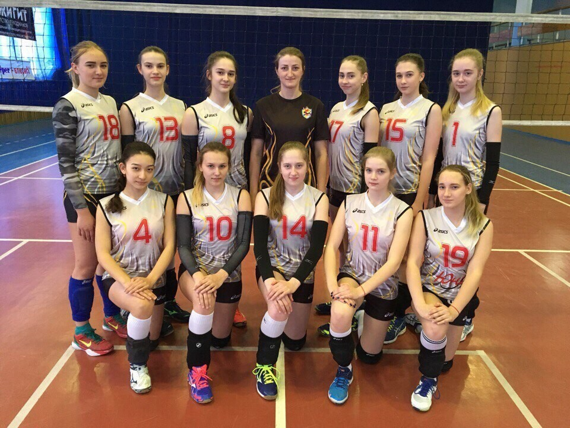

Омский спорт
Спортивный комплекс Юность

Главная
Юность
«Спортивный комплекс «Юность» имени С.С. Бовкуна»
12 декабря 1969 года Омская "ЮНОСТЬ" провела свой первый официальный матч в чемпионатах страны на уровне команд мастеров. С этого дня и ведется отсчет истории клуба. Команда СДЮСШОР №18 неоднократно побеждала в первенстве Министерства просвещения России. В 1988 году стала чемпионом Спартакиады школьников России. В 2003 году сборная команда Омской области, которая состояла из воспитанников спортивной школы, заняла в Спартакиаде Сибири 4 место.
Основными направлениями профессиональной деятельности спортивного комплекса на сегодняшний день являются оказание физкультурно-оздоровительных услуг населению и проведение спортивно-массовых мероприятий. На базе спортивного комплекса функционирует большой и малый бассейн, тренажерный зал, спортивный зал для занятий подвижными видами спорта(баскетбол,волейбол, флорбол), зал для фехтование, различных видов единоборств, и аэробики.
Проводятся индивидуальные и групповые занятия по гидроаэробике, теннису, оздоровлению беременных, ведется набор в группы по обучению плаванию. Предоставляется аренда большого бассейна и спортивных залов. Любители футбола могут воспользоваться футбольным полем с естественным покрытием. В зимний период времени осуществляется прокат лыж и коньков.
Спортивный комплекс «Юность» имени С.С. Бовкуна давно стал любимым местом отдыха омичей. Жители нашего города выбирают спортивный комплекс как место проведения личного, семейного и корпоративного досуга. Будьте в спорте вместе с нами!
